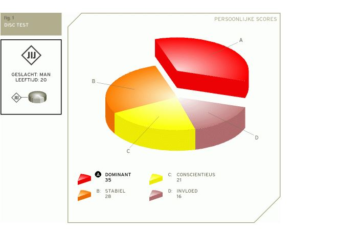

Your DISC test report
Your specific distribution of scores on the DISC test gives an indication of your unique personal DISC profile. You can see it as your own personal DISC 'DNA'. The pie chart below shows the distribution of your scores.
The highest percentage probably corresponds to your most dominant behavior style, the second highest percentage with your most defining behavior style, etc. The four DISC factors are arranged for you as follows: Dominant, Stable, Conscientious and Influence.

My DISC personality characterization
Your most obvious behavioral style is probably Dominant, followed by Stable. When you clearly first have dominant and then stability as the most important behavioral style, the positive impression you then make on people is as follows:
Your response to challenges is practical, realistic and enthusiastic. You like facts and are well able to offer assistance provided concrete information is available. You are confident, independent and individualistic. People probably view you as rational and problem-solving at the same time.